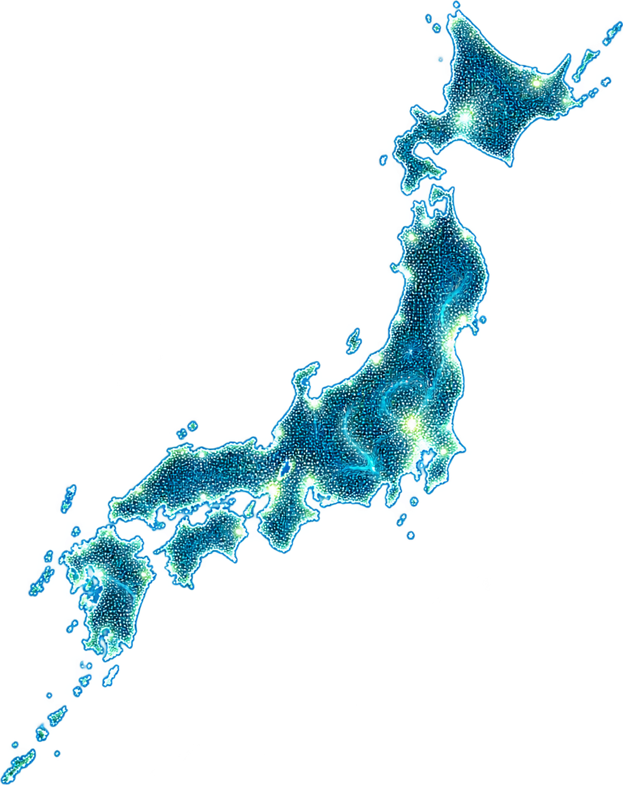

日本では、何秒に1回、何が起きている？
NIPPON OCCURRENCE OBSERVATORY

知らないうちに、
ニッポンは
今も動いている。
ニッポンは
今も動いている。
JAPAN IS MOVING
EVEN NOW, ALL AROUND US
EVEN NOW, ALL AROUND US
DATA
PEOPLE
SOCIETY
JAPAN
PEOPLE
SOCIETY
JAPAN
EVERY OCCURRENCE
CONNECTS A BIGGER TOMORROW
CONNECTS A BIGGER TOMORROW